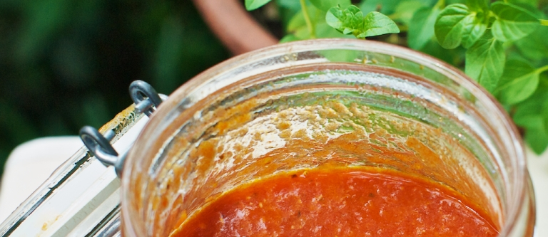

Чураско

На 4 крупных помидорах сделать крестообразный надрез, ошпарить их кипятком, а затем аккуратно снять кожицу. 1 белую луковицу, 2 зубчика чеснока почистить, вымыть. 1 красный остый перец вымыть, удалить семена. Вымыть и обсушить укроп, петрушку и синий базилик.
Сложить все в блендер, измельчить. В небольшую кастрюльку или в сотейник налить 5 ст.л. растительного масла, поставить на огонь. Когда масло разогреется – выложить томатное пюре, довести до кипения. Добавить 0,5 ст.л. соли, 3 ч.л. сахара, перемешайть. Сделать минимальный огонь, накрыть крышкой и тушить соус, периодически помешивая, час.
В итоге соус должен стать густым и однородным. Хранить в холодильнике после остывания.